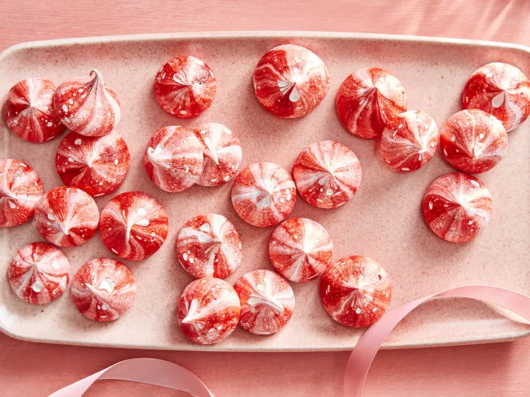

Strawberry Malted Milk Meringues

Channel Willy Wonka and surprise Santa when you combine two sweet treats. Here, a festive meringue that tastes like a strawberry malt.
Ingredients
1 ½ cups freeze-dried strawberries (or as needed)
5 large egg whites
1 ½ cups sugar
1 pinch cream of tartar
2 tablespoons malted milk powder
½ teaspoon vanilla extract
1 teaspoon vanilla extract
Red gel food coloring (Optional)
Directions
1. Preheat the oven to 200 degrees F (95 degrees C). Fit a large round pastry tip in a pastry bag. Set bag, tip side down, in a large, tall cup and fold edges over cup rim for easy filling.
2. Pulverize freeze-dried strawberries in a food processor. Measure out 3 tablespoons strawberry powder. Use any leftovers for dusting the plate or another use.
3. Whisk together egg whites and sugar in a bowl set over a pot of simmering water. Whisk until sugar has dissolved, about 4 minutes. Transfer to a large bowl. Add cream of tartar. Beat with an electric mixer at low speed until mixture starts to foam. Continue beating at high speed until glossy and stiff peaks form (tips stand straight). Fold in 3 tablespoons strawberry powder, milk powder, and vanilla.
4. Bake in the preheated oven until a toothpick inserted in the center comes out clean, about 30 minutes. Cool on a wire rack for 5 minutes. Run a table knife around the edges to loosen. Invert carefully onto a cooling rack. Let cool, about 30 minutes.
5. Pipe quarter-size meringue dollops on the baking sheet, pulling bag straight up and spacing about 1 inch apart.
6. Bake in the preheated oven until meringues are firm and easily peel off the parchment, 60 to 75 minutes.